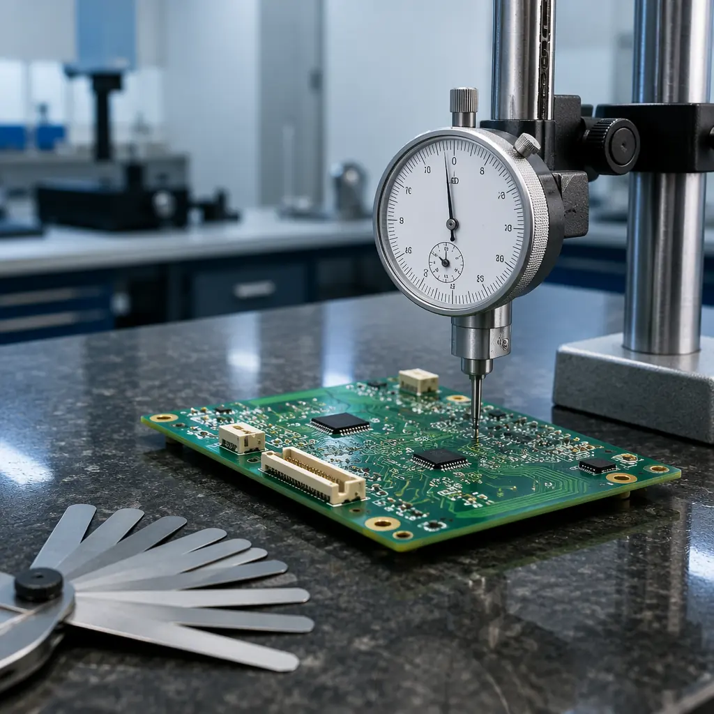
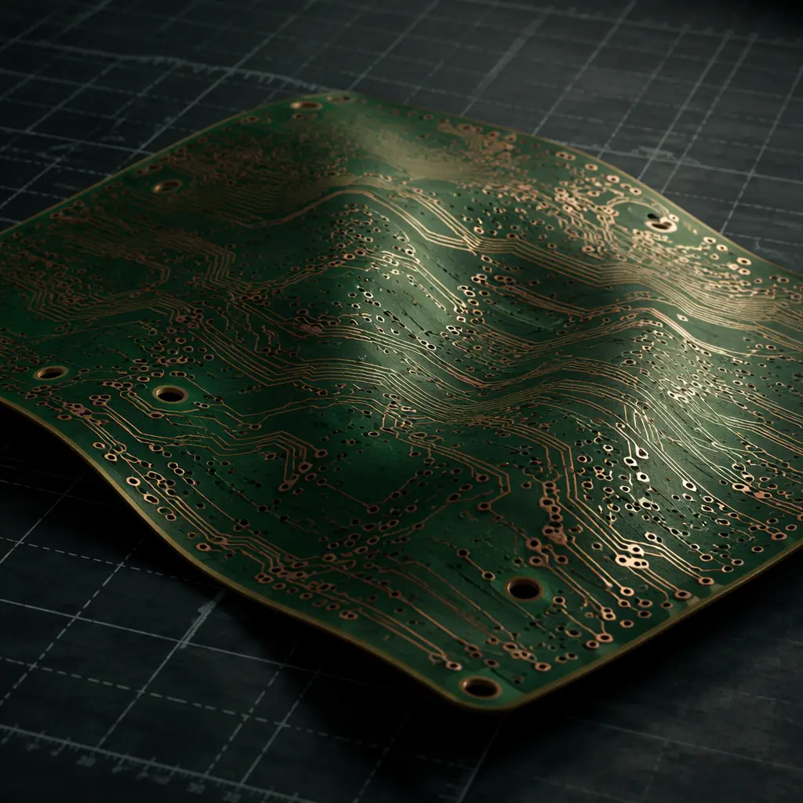

PCB warpage is the silent killer of SMT assembly yield. A board that's perfectly flat at room temperature can twist 0.5–2.0mm out of plane during the soldering thermal cycle — enough to cause tombstoning on 0402 passives, open joints on BGAs, and co-planarity failures that scrap entire panels. The IPC standard sets the maximum allowable warpage at 0.75% for surface mount boards — but many designs exceed this limit without the engineer ever knowing until assembly rejects arrive.
At Huaxing PCBA, we process 8 million solder joints per day across 8 SMT lines, and warpage-related defects account for 3–7% of all assembly failures on boards that weren't designed with warpage control in mind. This guide covers the physics behind warpage, the IPC-TM-650 measurement methodology, and the design, material, and process strategies that prevent it. For broader thermal management, see our PCB thermal management guide.

What Causes PCB Warpage During Reflow?
Warpage is fundamentally a CTE mismatch problem — the coefficient of thermal expansion (CTE) varies between the different materials in your PCB stackup, and when the entire assembly climbs to 240–260°C during reflow, those materials expand at different rates. The result is internal stress that deforms the board.
Key Insight: Warpage isn't a single-mode failure. It manifests as bow (cylindrical curvature), twist (corners lifting diagonally), or a combination of both. IPC-TM-650 distinguishes between these modes because they have different root causes — and different prevention strategies.
The Four Root Causes of PCB Warpage
Asymmetric Copper Distribution
This is the number one cause. Copper has a CTE of ~17 ppm/°C while FR-4 laminate is ~14 ppm/°C in the X-Y plane — but 50–70 ppm/°C in the Z-axis. When copper distribution is asymmetric (e.g., 70% copper on layer 1, 30% on layer 4), the copper-heavy side constrains expansion while the resin-rich side expands freely → board bends toward the copper-heavy side at temperature. Our PCB stackup design guide covers symmetry principles in detail.
Unbalanced Laminate Construction
Using different prepreg styles, resin content percentages, or glass weave styles on opposite sides of the core creates a built-in stress gradient. Even if copper distribution is symmetric, unequal resin flow during lamination produces residual stress that releases — visibly — during the first thermal excursion. Proper laminate selection is critical for symmetric construction.
Non-Uniform Thermal Mass
Large copper pours, heavy ground planes, and thermal pads act as heat sinks that slow local heating rates. During reflow ramp-up, areas with less copper reach peak temperature 10–30 seconds before heavy copper zones — creating a transient thermal gradient that temporarily warps the board. This effect is most pronounced on boards mixing 0.5oz signal layers with 2oz+ power planes. See our copper weight selection guide for design rules.
Tg Overshoot During Reflow
FR-4 laminate undergoes a phase transition at its glass transition temperature (Tg). Below Tg, the material is rigid with low CTE. Above Tg — typically 130–180°C for standard FR-4 — the polymer matrix softens and CTE in the Z-axis jumps 3–5×. Standard FR-4 boards spending 60–90 seconds above Tg during lead-free reflow (peak 245–260°C) experience the most aggressive warpage. High-Tg materials (>170°C) reduce but don't eliminate this effect. For material selection guidance, see our PCB materials guide.

IPC-TM-650 Warpage Measurement: The Standard Method
IPC-TM-650 Method 2.4.22 defines how to measure and quantify PCB warpage. Understanding this method is essential — it's what your assembly partner uses to accept or reject your boards, and what you'll reference in your fabrication specification.
Measurement Setup
Reference Surface
Place the PCB on a certified flat granite surface plate (flatness within 0.001mm). The board rests under its own weight — no clamping, no weights. For double-sided assemblies, measure both sides independently.
Measurement Points
Measure the maximum vertical deviation (gap between board and surface plate) at the four corners and the center. For boards >150mm in any dimension, add measurement points at mid-span locations. Record the maximum gap in millimeters.
Calculation
Warpage (%) = (Maximum Deviation in mm / Diagonal Length in mm) × 100. For a 200mm × 150mm board (diagonal = 250mm), a measured gap of 1.5mm gives: (1.5 / 250) × 100 = 0.60% — within the 0.75% limit for SMT. A gap of 2.5mm gives 1.0% — exceeding the limit and requiring corrective action.
IPC Warpage Acceptance Criteria
| Application | Maximum Bow & Twist | Standard Reference |
|---|---|---|
| Surface mount (SMT) components | 0.75% of diagonal | IPC-A-600 Class 2 |
| Through-hole only assemblies | 1.50% of diagonal | IPC-A-600 Class 1 |
| High-reliability / Class 3 | 0.50% of diagonal | IPC-6012 Class 3 |
| BGA assemblies (all classes) | 0.50% of diagonal | IPC-7095 (BGA design & assembly) |
| Flex and rigid-flex PCBs | Application-specific; consult IPC-6013 | IPC-6013 |
BGA assemblies impose the tightest constraint because a 0.5% warpage across a 45mm BGA package translates to 0.225mm of co-planarity deviation — enough to cause open joints on 0.8mm pitch devices. For the full acceptance criteria, see our IPC-A-600 acceptance criteria guide.
Design Strategies to Minimize Warpage
Warpage prevention starts at the CAD station. These design rules address the root causes before the board ever reaches the fab house.
Balance Copper Distribution Across the Stackup
Aim for copper coverage within ±15% between symmetric layers (Layer 1 vs Layer N, Layer 2 vs Layer N-1). If Layer 2 is a ground plane with 85% copper fill, Layer N-1 (the symmetric partner) should also be a plane or high-fill signal layer — not a low-density routing layer. Most PCB CAD tools have a copper area calculator; use it during stackup planning. Our stackup design guide covers the full methodology.
Use Thieving Patterns on Low-Density Layers
If a layer must have low copper density (e.g., a routing layer with only a few traces), add copper thieving — non-functional copper shapes — to bring coverage above 40%. The thieving should be hatched (cross-hatch pattern) rather than solid to avoid creating a parasitic plane. Thieving adds no cost and dramatically improves symmetry.
Specify Symmetric Prepreg and Core Construction
For a 4-layer board: Core (with layers 2–3) should be centered in the stackup, with identical prepreg types and resin content above and below. For example: Prepreg 2116 (60% resin) / 0.5mm Core / Prepreg 2116 (60% resin) — not Prepreg 2116 / Core / Prepreg 1080. The glass style, resin percentage, and cured thickness must be symmetric. Our laminate selection guide covers prepreg specifications.
Add Panel Rails with Balanced Copper
During fabrication, your board is part of a larger panel. If your design has asymmetric copper but the panel rails are bare FR-4, the rails don't contribute to symmetry — and the warpage you see at assembly is the panel-level warpage, not just your board. Specify that panel rails include copper balancing patterns (hatched fill) on all layers. Good fabricators do this by default; specify it explicitly in your fab notes.
Material Selection for Warpage Reduction
Not all laminates behave equally through the reflow thermal cycle. Material selection is especially critical for boards exceeding 1.6mm thickness or 200mm in any dimension.
| Material | Tg (°C) | CTE XY (ppm/°C) | CTE Z (ppm/°C) | Warpage Risk |
|---|---|---|---|---|
| Standard FR-4 | 130–140 | 14–16 | 50–70 (above Tg) | High |
| Mid-Tg FR-4 | 150–160 | 13–15 | 40–55 (above Tg) | Medium |
| High-Tg FR-4 | 170–180 | 12–14 | 30–45 (above Tg) | Low–Medium |
| Polyimide | 250+ | 12–14 | 40–50 | Low |
| Rogers 4350B (RF) | >280 | 10–14 | 32 | Very Low |
| BT Epoxy (IC substrate) | 180–220 | 12–14 | 35–45 | Low |
High-Tg FR-4 is the sweet spot for most commercial and industrial applications — it reduces time above Tg during reflow from 90 seconds to approximately 30–40 seconds, cutting warpage risk by roughly half at a marginal cost increase of $0.50–1.00 per board. For deeper material comparisons, see our PCB materials comparison guide.
Process Controls During Assembly
Even a well-designed board can warp if the assembly process isn't controlled. These are the process-side countermeasures we apply on our SMT lines.
Optimize Reflow Profile Ramp Rate
The preheat ramp rate should not exceed 2–3°C/second. Faster ramps create larger transient thermal gradients across the board — the edges heat faster than the center, causing temporary bow. A controlled ramp gives the entire board time to reach thermal equilibrium before the soldering zone. Most warpage problems we diagnose are traceable to aggressive ramp rates, not design flaws.
Use Board Supports on the Conveyor
For boards exceeding 150mm in the conveyor direction, center-support pins or a full-width support rail prevent sagging as the laminate softens above Tg. This is standard practice on our lines for boards over 200mm — the support rail cost is negligible compared to the yield gain.
Bake Boards Before Assembly (When Warranted)
PCBs stored in uncontrolled humidity environments absorb moisture. During reflow, this moisture vaporizes and creates internal delamination pressure — which amplifies warpage. For boards stored >6 months or in >60% RH environments, a 4-hour bake at 105°C before assembly eliminates this variable. Our MSL handling guide covers baking protocols.
Inspection and Rework for Warped Boards
If you receive boards that fail the IPC warpage criteria, don't scrap them immediately. Some warpage is recoverable — and some is permanent.
Thermal Re-Flattening (Recoverable Cases)
Boards warped due to residual lamination stress — not asymmetric copper — can sometimes be re-flattened by pressing between flat plates at 10–15°C above Tg for 30–60 minutes, followed by controlled cooling. This re-stresses the polymer matrix in a flat configuration. Success rate is approximately 60–70% for FR-4, lower for polyimide.
Mechanical Flattening During Assembly (Last Resort)
For boards with mild warpage (<0.5% over spec), a dedicated flattening fixture — essentially a weighted plate that holds the board flat during reflow — can salvage a production run. This adds process cost and is not a long-term solution, but it keeps the line running while you investigate the root cause.
When to Reject: The 1.0% Rule
If warpage exceeds 1.0% of diagonal on an SMT board, reject the lot. At this level, no amount of fixturing will produce reliable solder joints on fine-pitch components. The root cause is almost always a design or laminate problem that requires engineering change — not a process adjustment. For detailed inspection guidance, see our PCB failure analysis guide.
Summary: Warpage Is Preventable by Design
PCB warpage during reflow is not an inevitable manufacturing defect — it's a design outcome. Symmetric copper distribution, balanced laminate construction, appropriate material selection for your thermal requirements, and controlled assembly process parameters together reduce warpage risk from "likely" to "rare." The cost of prevention — a few hours of stackup analysis and a marginal material upgrade — is orders of magnitude less than the cost of a rejected production lot.
At Huaxing PCBA, every new customer design receives a warpage risk assessment as part of our standard DFM review. We analyze copper symmetry, recommend material upgrades where needed, and optimize reflow profiles based on board dimensions and thermal mass. Our 8 SMT lines run with center-support fixturing as standard for boards over 200mm. Learn more about stackup design or send your Gerber files for a free DFM and warpage risk assessment — delivered within 24 hours.